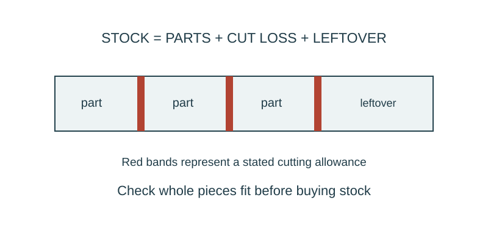

Job 34 · Estimate and schedule the work
An itemized estimate, feasible piece plan, and task sequence.
110 minutes • Tape measure + pocket notebook • Name: __________________ Date: __________
Materials: Current drawings, paper, calculator; teacher-provided fictional prices or documented real catalog sources.

Brief · 12 min
- Which part of your estimate is measured, calculated, assumed, or priced from a source?
- Set up a dated notebook spread: sketch and readings on the left; calculation, decision, test, and revision on the right. Mark small sketches NTS unless drawn to a chosen scale.
- Work in pairs and rotate roles. Each student keeps an individual notebook and performs a tool action and a calculation.
Measure · 18 min
- Make a material takeoff from the current drawing, not an older revision.
- Record unit size, number needed, purchasable quantity, and price source/date.
- If prices are invented for class, label the entire quote fictional.
Plan · 20 min
- Draw a cutting/piece plan and calculate waste separately from usable spare.
- Prepare an itemized total; show any stated tax or contingency separately and explain its basis.
- Sequence work: verify, prepare, make, inspect, revise. Identify any material or tool dependency.
Worked example
A job needs five 18-in strips. Stock is 48 in at $4 each; assume 1/8-in kerf per separating cut. Find a feasible purchase count. Check whole parts per stock before multiplying price. Two 18-in parts plus cuts fit in one 48-in stock. Three stocks supply five parts; cost $12. Total-length division alone would undercount.
Make · 28 min
- Exchange estimate packages and perform an arithmetic and feasibility audit.
- Teacher supplies one price, quantity, or dimension change.
- Issue a revised quote and note its effect on task order or materials.
Test · 20 min
- Every quantity traces to a current drawing or stated allowance.
- Purchase plan can physically supply the parts.
- Each student recalculates one changed line independently.
Explain · 12 min
- Complete the individual exit below before discussing answers.
- Add the test result, revision, and notebook page reference to your response. Use the notebook as evidence rather than retyping every page.
- Save the three selected responses and submit the lesson for teacher review. Show your physical work and notebook to the teacher. Clean up and return shared supplies.
Individual exit
Seven 20-in parts are needed from 48-in stock at $5 each. Each separating cut uses 1/8 in. Find stocks to buy and cost; explain why 140/48 rounded upward is not enough.